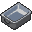
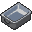

Это полное руководство по основным механикам игры. Оно поможет лучше разобраться, как правильно выжить и продержаться максимально долго.
Руквоводство будет меняться в связи с глобальными обновлениями игры. На данный момент у игры билд 47.22
Еда и её приготовление
 Обучение основам
Обучение основам

Использование приборов: Если вы хотите разогреть или пожарить пищу то для этого подойдут такие приборы как: Костёр, Плита, Микроволновка, гриль или камин. Для того что-бы начать использовать прибор нужно положить туда пищу и нажать кнопку включить, после чего пойдет готовка

Вот так выглядят приборы для приготовления


Посуда для готовки разных блюд:


 


В каких крафтах используется посуда:
- Форма для выпечки - ТОРТ и ПИРОГ
- Кастрюля - СУП, РИС и Спагетти
- Кастрюлька - СПАГЕТТИ и РИС
- Жаровня - ЖАРКОЕ
- Скалка - ЗАГОТОВКА ДЛЯ ПИРОГА
- Кружка - НАПИТКИ
- Миска - СУП, СПАГЕТТИ, РАГУ, РИС, ОВСЯНКА, БОБЫ, ОВСЯНКА, СУХОЙ ЗАВТРАК
- Сковорода - ЖАРКОЕ
- Чайник - Напитки
- Нож (любой) - Нарезка хлеба и торта